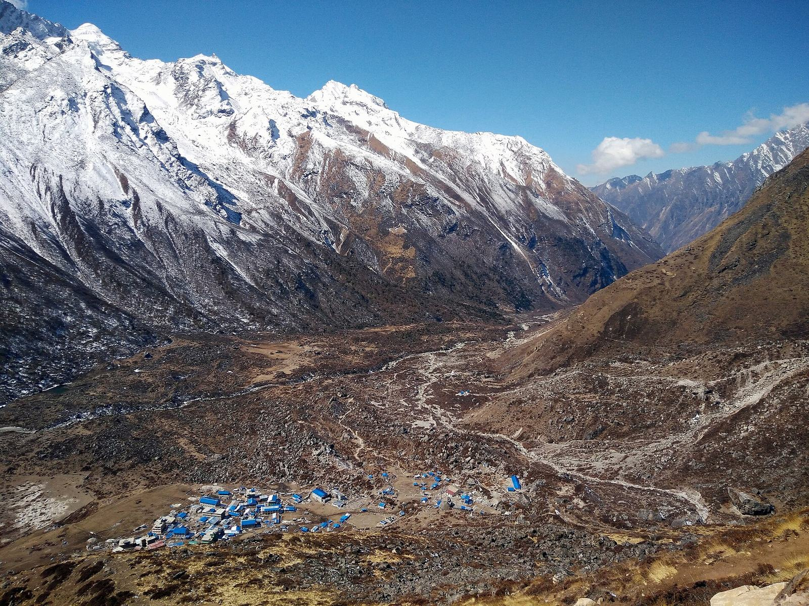
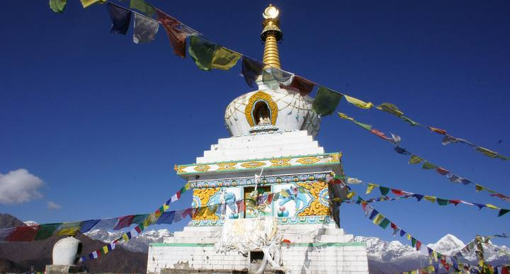
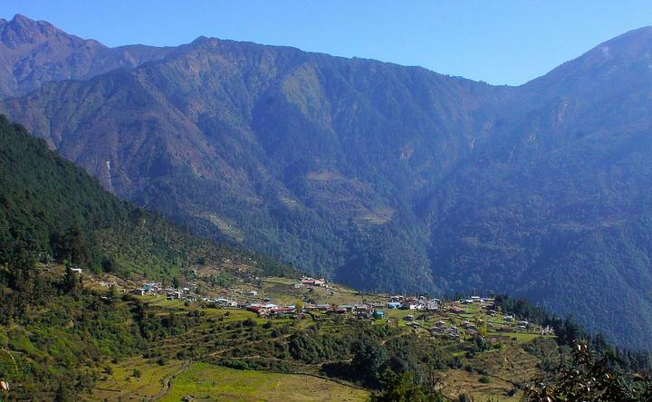

Langtang
Langtang
Langtang Valley
Up a glacial valley to Kyanjin Gompa, a day's drive north of Kathmandu
The closest high mountains to Kathmandu, reached by road.

Langtang National Park starts a day's drive north of Kathmandu. The main valley climbs through forest to Kyanjin Gompa beneath Langtang Lirung, with Tamang and Tibetan-influenced villages along the way. To the south the sacred lakes of Gosaikunda and the ridges of Helambu link back toward the Kathmandu Valley on foot.
No flights are involved, treks are a week or less, and altitude is moderate by Nepali standards. The valley was badly hit by the 2015 earthquake and has been rebuilt; lodges are now plentiful again.
March to May and October to early December are best. Winter brings snow on the Laurebina pass above Gosaikunda. In the monsoon the road in is prone to landslides.
Buses and jeeps run from Kathmandu to Syabrubesi and Dhunche in seven to nine hours. Helambu starts from Sundarijal on the edge of the city.
Langtang
Up a glacial valley to Kyanjin Gompa, a day's drive north of Kathmandu
 Langtang
Langtang
A steep ridge climb from Dhunche to Shiva's lakes at 4,380 m

LangtangThree days to a sacred 3,771 m summit above Helambu's largest village

LangtangA ridge and village loop through Hyolmo country, starting at the city's edge
 Langtang
Langtang
From the Langtang glaciers over a 4,610 m pass and back to Kathmandu on foot
A village loop below the Tibetan border, with nights in Tamang homes
The map loads when you scroll here.
Marker positions come from OpenStreetMap where we could match a place, and from our own estimates elsewhere. Treat them as a guide, not as survey points.
| Place | Type | Altitude | On treks |
|---|---|---|---|
| Ganja La | Pass | 5,122 m | — |
| Tserko Ri | Peak | 4,984 m | — |
| Kyanjin Ri | Viewpoint | 4,773 m | Langtang Valley, Langtang, Gosaikunda and Helambu |
| Laurebina La | Pass | 4,610 m | Langtang, Gosaikunda and Helambu |
| Gosaikunda | Lake | 4,380 m | Gosaikunda, Langtang, Gosaikunda and Helambu |
| Langshisha Kharka | Camp | 4,160 m | — |
| Laurebina | Lodge settlement | 3,910 m | Gosaikunda, Langtang, Gosaikunda and Helambu |
| Kyanjin Gompa | Village | 3,870 m | Langtang Valley, Langtang, Gosaikunda and Helambu |
| Ama Yangri | Peak | 3,771 m | Ama Yangri |
| Phedi | Lodge settlement | 3,740 m | Langtang, Gosaikunda and Helambu |
| Tharepati | Lodge settlement | 3,690 m | Helambu Circuit, Langtang, Gosaikunda and Helambu |
| Cholangpati | Lodge settlement | 3,584 m | Gosaikunda, Langtang, Gosaikunda and Helambu |
| Mundu | Village | 3,543 m | Langtang Valley, Langtang, Gosaikunda and Helambu |
| Ghopte | Lodge settlement | 3,430 m | Langtang, Gosaikunda and Helambu |
| Langtang Village | Village | 3,430 m | Langtang Valley, Langtang, Gosaikunda and Helambu |
| Chandanbari | Village | 3,330 m | Gosaikunda, Langtang, Gosaikunda and Helambu |
| Magin Goth | Lodge settlement | 3,285 m | Helambu Circuit, Langtang, Gosaikunda and Helambu |
| Nagthali | Viewpoint | 3,165 m | Tamang Heritage Trail |
| Thangshyap | Lodge settlement | 3,140 m | Langtang Valley, Langtang, Gosaikunda and Helambu |
| Ghodatabela | Lodge settlement | 3,030 m | Langtang Valley, Langtang, Gosaikunda and Helambu |
| Brimdang | Village | 2,848 m | Tamang Heritage Trail |
| Tatopani | Village | 2,607 m | Tamang Heritage Trail |
| Tarkeghyang | Village | 2,600 m | Ama Yangri, Helambu Circuit |
| Sermathang | Village | 2,590 m | Helambu Circuit |
| Sherpagaon | Village | 2,563 m | — |
| Melamchi Gaun | Village | 2,530 m | Helambu Circuit |
| Kutumsang | Village | 2,470 m | Helambu Circuit, Langtang, Gosaikunda and Helambu |
| Lama Hotel | Lodge settlement | 2,470 m | Langtang Valley, Langtang, Gosaikunda and Helambu |
| Rimche | Lodge settlement | 2,400 m | Langtang Valley, Langtang, Gosaikunda and Helambu |
| Thuman | Village | 2,338 m | Tamang Heritage Trail |
| Gatlang | Village | 2,238 m | Tamang Heritage Trail |
| Briddim | Village | 2,229 m | Tamang Heritage Trail |
| Thulo Syabru | Village | 2,210 m | Langtang, Gosaikunda and Helambu |
| Rongga Bhanjyang | Pass | 2,187 m | Tamang Heritage Trail |
| Chipling | Village | 2,170 m | Helambu Circuit, Langtang, Gosaikunda and Helambu |
| Golphu Bhanjyang | Village | 2,130 m | Helambu Circuit, Langtang, Gosaikunda and Helambu |
| Bamboo | Lodge settlement | 1,970 m | Langtang Valley, Langtang, Gosaikunda and Helambu |
| Dhunche | Town | 1,960 m | Gosaikunda |
| Goljung | Village | 1,960 m | Tamang Heritage Trail |
| Thulo Bharkhu | Village | 1,860 m | — |
| Pati Bhanjyang | Village | 1,770 m | Helambu Circuit, Langtang, Gosaikunda and Helambu |
| Chilime | Village | 1,762 m | Tamang Heritage Trail |
| Timure | Village | 1,762 m | — |
| Lingling | Village | 1,737 m | Tamang Heritage Trail |
| Timbu | Village | 1,600 m | Ama Yangri |
| Syabrubesi | Village | 1,460 m | Langtang Valley, Langtang, Gosaikunda and Helambu, Tamang Heritage Trail |
| Melamchi Pul Bazaar | Town | 870 m | Helambu Circuit |
Langtang National Park entry permit · Department of National Parks and Wildlife Conservation
| Foreign nationals | NPR 3,000 | person, single entry |
| SAARC nationals | NPR 1,500 | person, single entry |
| Nepali citizens | NPR 100 | person |
Where: At the park checkpoint in Dhunche on the drive to Syabrubesi, or in advance at the Tourist Service Centre in Bhrikutimandap, Kathmandu.
The Nepal Tourism Board and current guides agree on NPR 3,000 and NPR 1,500. Some agencies add 13% VAT to the foreigner fee (NPR 3,390); we could not confirm that it is charged, so carry the difference. NPR 100 for Nepali citizens is the standard mountain-park rate; the tourism board's page still shows an older figure.
Trekkers' Information Management System card · Nepal Tourism Board and the Trekking Agencies' Association of Nepal
| Foreign nationals | NPR 2,000 | person, per trek |
| SAARC nationals | NPR 1,000 | person, per trek |
Where: Only through a registered trekking agency, which applies in the Nepal Tourism Board's online system with your route and your guide's details. Individual trekkers can no longer buy one over the counter.
Since the revised rules of 31 March 2023 the card is tied to trekking with a licensed guide on the tourism board's listed routes. It is not used in Khumbu, where the municipality's Trek Card took its place in 2017. For restricted areas the published rules pull both ways: TAAN's pages say TIMS applies in every trekking area, restricted ones included, yet also list visitors holding Department of Immigration permits among those who do not need one, and agencies disagree. Your agency, which is compulsory there anyway, will know what the checkposts on your route ask for. Reports from 2025–26 describe patchy checks of the card, especially in Annapurna.
Agency required
Shivapuri Nagarjun National Park entry ticket · Department of National Parks and Wildlife Conservation
| Foreign nationals | NPR 1,000 | person, per day and entry |
| SAARC nationals | NPR 600 | person, per day and entry |
| Nepali citizens | NPR 100 | person, per day and entry |
Where: At the park gate, for example at Sundarijal.
The park's own fee table charges per day and says SAARC and other foreign visitors must go in with a nature guide. We could not confirm how that is applied to trekkers walking through from Sundarijal to Chisapani. Bicycles and vehicles pay extra.
Rasuwa (Thuman and Timure) restricted area permit · Department of Immigration
| All foreign nationals | USD 20 | person per week |
Where: Department of Immigration in Kathmandu, through a registered trekking agency only.
Applies to the border area north of Syabrubesi, which the fee table defines as Gosaikunda Rural Municipality ward 1 and part of ward 2. The main Langtang valley, Gosaikunda and Helambu trails do not need it. Since 22 March 2026 the permit can be issued to a single trekker, through a registered agency and with a licensed guide.
Agency required